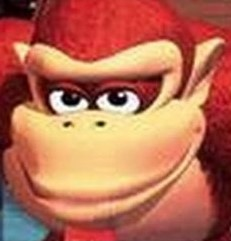

<div  id="dk" style="position:fixed; left:565; top:5; "><h1 align=center> onkeydown </h1></div>
<div  id="lk" style="position:fixed; left:730; top:5; "><h1 align=center> By Jacob</h1></div>
<html>

<p>


<body onkeydown="{

   document.all.myText01.value = event.key

   if (event.key == 'd') { 
	document.getElementById('dk').style.left = 
	parseInt(document.getElementById('dk').style.left) + 10 + 'px' }
   if (event.key == 'a') { 
	document.getElementById('dk').style.left = 
	parseInt(document.getElementById('dk').style.left) - 10 + 'px' }
   if (event.key == 's') { 
	document.getElementById('dk').style.top = 
	parseInt(document.getElementById('dk').style.top) + 10 + 'px' }
   if (event.key == 'w') { 
	document.getElementById('dk').style.top = 
	parseInt(document.getElementById('dk').style.top) - 10 + 'px' }


   if (event.key == 'ArrowRight') { 
	document.getElementById('lk').style.left = 
	parseInt(document.getElementById('lk').style.left) + 10 + 'px' }

 if (event.key == 'ArrowLeft') { 
	document.getElementById('lk').style.left = 
	parseInt(document.getElementById('lk').style.left) - 10 + 'px' }

 if (event.key == 'ArrowDown') { 
	document.getElementById('lk').style.top = 
	parseInt(document.getElementById('lk').style.top) + 10 + 'px' }
 
if (event.key == 'ArrowUp') { 
	document.getElementById('lk').style.top = 
	parseInt(document.getElementById('lk').style.top) - 10 + 'px' }


}">



<input type=text id="myText01" value=0><h1 align=center> </h1>
<html>

<p>
Use WASD and Arrow keys

